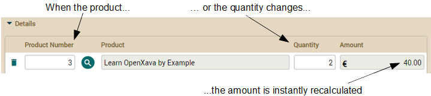

If you don't like videos follow the instructions below.
Calculated properties
Perhaps the most simple business logic you can add to your application is a calculated property. The properties you have used until now are persistent, i.e., each property is stored in a column in a table in the database. A calculated property is a property that does not store its value in the database but it's calculated any time the property is accessed. See the difference between a persistent and a calculated property.// Persistent property
@Getter @Setter // Has getter and setter
int quantity; // Has a field, so it's persistent
// Calculated property
public int getAmount() { // It has no field and no setter, only a getter
return quantity * price; // with a calculation
}
We are going to use calculated properties to add the money element to our invoicing application. Because, we have details, products, quantities. But what about amounts?
Simple calculated property
The first step will be to add an amount property to the Detail. We want the detail amount to be recalculated and shown to the user when the user chooses a product and type in the quantity:
Adding this feature to your current code is practically adding a calculated property to Detail. Just add the next code to the Detail class:
@Money
@Depends("product.number, quantity") // When the user changes product or quantity
public BigDecimal getAmount() { // this property is recalculated and redisplayed
if (product == null || product.getPrice() == null) return BigDecimal.ZERO;
return new BigDecimal(quantity).multiply(product.getPrice());
}
Now you have to add this new property to the details collection of CommercialDocument:
@ElementCollection
@ListProperties("product.number, product.description, quantity, amount") // amount added
Collection<Detail> details;